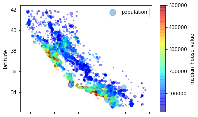
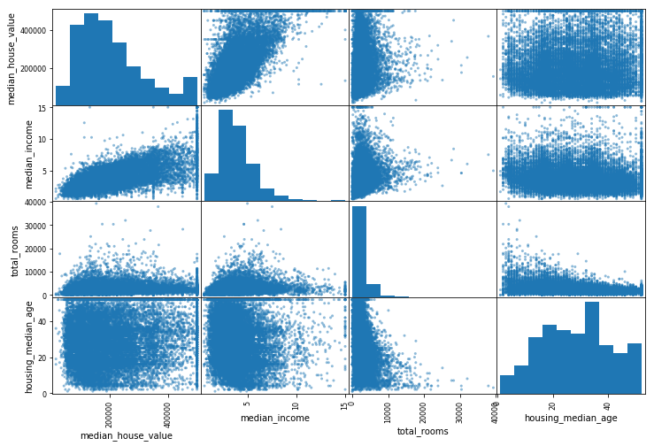

# download dataset
import os
import tarfile
import urllib
DOWNLOAD_ROOT = "http://raw.githubusercontent.com/ageron/handson-ml/master/"
HOUSING_PATH = "datasets/housing"
HOUSING_URL = DOWNLOAD_ROOT + HOUSING_PATH + "/housing.tgz"
print(HOUSING_URL)
def fetch_housing_data(housing_url = HOUSING_URL,housing_path = HOUSING_PATH):
if not os.path.isdir(housing_path):
os.makedirs(housing_path)
tgz_path = os.path.join(housing_path,"housing.tgz")
urllib.request.urlretrieve(housing_url,tgz_path)
housing_tgz = tarfile.open(tgz_path)
housing_tgz.extractall(path=housing_path)
housing_tgz.close()http://raw.githubusercontent.com/ageron/handson-ml/master/datasets/housing/housing.tgz# load data
import pandas as pd
def load_housing_data(housing_path = HOUSING_PATH):
csv_path = os.path.join(housing_path, "housing.csv")
return pd.read_csv(csv_path)# 调用
if not os.path.isfile(HOUSING_PATH):
fetch_housing_data()
housing = load_housing_data()
housing| longitude | latitude | housing_median_age | total_rooms | total_bedrooms | population | households | median_income | median_house_value | ocean_proximity | |
|---|---|---|---|---|---|---|---|---|---|---|
| 0 | -122.23 | 37.88 | 41.0 | 880.0 | 129.0 | 322.0 | 126.0 | 8.3252 | 452600.0 | NEAR BAY |
| 1 | -122.22 | 37.86 | 21.0 | 7099.0 | 1106.0 | 2401.0 | 1138.0 | 8.3014 | 358500.0 | NEAR BAY |
| 2 | -122.24 | 37.85 | 52.0 | 1467.0 | 190.0 | 496.0 | 177.0 | 7.2574 | 352100.0 | NEAR BAY |
| 3 | -122.25 | 37.85 | 52.0 | 1274.0 | 235.0 | 558.0 | 219.0 | 5.6431 | 341300.0 | NEAR BAY |
| 4 | -122.25 | 37.85 | 52.0 | 1627.0 | 280.0 | 565.0 | 259.0 | 3.8462 | 342200.0 | NEAR BAY |
| 5 | -122.25 | 37.85 | 52.0 | 919.0 | 213.0 | 413.0 | 193.0 | 4.0368 | 269700.0 | NEAR BAY |
| 6 | -122.25 | 37.84 | 52.0 | 2535.0 | 489.0 | 1094.0 | 514.0 | 3.6591 | 299200.0 | NEAR BAY |
| 7 | -122.25 | 37.84 | 52.0 | 3104.0 | 687.0 | 1157.0 | 647.0 | 3.1200 | 241400.0 | NEAR BAY |
| 8 | -122.26 | 37.84 | 42.0 | 2555.0 | 665.0 | 1206.0 | 595.0 | 2.0804 | 226700.0 | NEAR BAY |
| 9 | -122.25 | 37.84 | 52.0 | 3549.0 | 707.0 | 1551.0 | 714.0 | 3.6912 | 261100.0 | NEAR BAY |
| 10 | -122.26 | 37.85 | 52.0 | 2202.0 | 434.0 | 910.0 | 402.0 | 3.2031 | 281500.0 | NEAR BAY |
| 11 | -122.26 | 37.85 | 52.0 | 3503.0 | 752.0 | 1504.0 | 734.0 | 3.2705 | 241800.0 | NEAR BAY |
| 12 | -122.26 | 37.85 | 52.0 | 2491.0 | 474.0 | 1098.0 | 468.0 | 3.0750 | 213500.0 | NEAR BAY |
| 13 | -122.26 | 37.84 | 52.0 | 696.0 | 191.0 | 345.0 | 174.0 | 2.6736 | 191300.0 | NEAR BAY |
| 14 | -122.26 | 37.85 | 52.0 | 2643.0 | 626.0 | 1212.0 | 620.0 | 1.9167 | 159200.0 | NEAR BAY |
| 15 | -122.26 | 37.85 | 50.0 | 1120.0 | 283.0 | 697.0 | 264.0 | 2.1250 | 140000.0 | NEAR BAY |
| 16 | -122.27 | 37.85 | 52.0 | 1966.0 | 347.0 | 793.0 | 331.0 | 2.7750 | 152500.0 | NEAR BAY |
| 17 | -122.27 | 37.85 | 52.0 | 1228.0 | 293.0 | 648.0 | 303.0 | 2.1202 | 155500.0 | NEAR BAY |
| 18 | -122.26 | 37.84 | 50.0 | 2239.0 | 455.0 | 990.0 | 419.0 | 1.9911 | 158700.0 | NEAR BAY |
| 19 | -122.27 | 37.84 | 52.0 | 1503.0 | 298.0 | 690.0 | 275.0 | 2.6033 | 162900.0 | NEAR BAY |
| 20 | -122.27 | 37.85 | 40.0 | 751.0 | 184.0 | 409.0 | 166.0 | 1.3578 | 147500.0 | NEAR BAY |
| 21 | -122.27 | 37.85 | 42.0 | 1639.0 | 367.0 | 929.0 | 366.0 | 1.7135 | 159800.0 | NEAR BAY |
| 22 | -122.27 | 37.84 | 52.0 | 2436.0 | 541.0 | 1015.0 | 478.0 | 1.7250 | 113900.0 | NEAR BAY |
| 23 | -122.27 | 37.84 | 52.0 | 1688.0 | 337.0 | 853.0 | 325.0 | 2.1806 | 99700.0 | NEAR BAY |
| 24 | -122.27 | 37.84 | 52.0 | 2224.0 | 437.0 | 1006.0 | 422.0 | 2.6000 | 132600.0 | NEAR BAY |
| 25 | -122.28 | 37.85 | 41.0 | 535.0 | 123.0 | 317.0 | 119.0 | 2.4038 | 107500.0 | NEAR BAY |
| 26 | -122.28 | 37.85 | 49.0 | 1130.0 | 244.0 | 607.0 | 239.0 | 2.4597 | 93800.0 | NEAR BAY |
| 27 | -122.28 | 37.85 | 52.0 | 1898.0 | 421.0 | 1102.0 | 397.0 | 1.8080 | 105500.0 | NEAR BAY |
| 28 | -122.28 | 37.84 | 50.0 | 2082.0 | 492.0 | 1131.0 | 473.0 | 1.6424 | 108900.0 | NEAR BAY |
| 29 | -122.28 | 37.84 | 52.0 | 729.0 | 160.0 | 395.0 | 155.0 | 1.6875 | 132000.0 | NEAR BAY |
| ... | ... | ... | ... | ... | ... | ... | ... | ... | ... | ... |
| 20610 | -121.56 | 39.10 | 28.0 | 2130.0 | 484.0 | 1195.0 | 439.0 | 1.3631 | 45500.0 | INLAND |
| 20611 | -121.55 | 39.10 | 27.0 | 1783.0 | 441.0 | 1163.0 | 409.0 | 1.2857 | 47000.0 | INLAND |
| 20612 | -121.56 | 39.08 | 26.0 | 1377.0 | 289.0 | 761.0 | 267.0 | 1.4934 | 48300.0 | INLAND |
| 20613 | -121.55 | 39.09 | 31.0 | 1728.0 | 365.0 | 1167.0 | 384.0 | 1.4958 | 53400.0 | INLAND |
| 20614 | -121.54 | 39.08 | 26.0 | 2276.0 | 460.0 | 1455.0 | 474.0 | 2.4695 | 58000.0 | INLAND |
| 20615 | -121.54 | 39.08 | 23.0 | 1076.0 | 216.0 | 724.0 | 197.0 | 2.3598 | 57500.0 | INLAND |
| 20616 | -121.53 | 39.08 | 15.0 | 1810.0 | 441.0 | 1157.0 | 375.0 | 2.0469 | 55100.0 | INLAND |
| 20617 | -121.53 | 39.06 | 20.0 | 561.0 | 109.0 | 308.0 | 114.0 | 3.3021 | 70800.0 | INLAND |
| 20618 | -121.55 | 39.06 | 25.0 | 1332.0 | 247.0 | 726.0 | 226.0 | 2.2500 | 63400.0 | INLAND |
| 20619 | -121.56 | 39.01 | 22.0 | 1891.0 | 340.0 | 1023.0 | 296.0 | 2.7303 | 99100.0 | INLAND |
| 20620 | -121.48 | 39.05 | 40.0 | 198.0 | 41.0 | 151.0 | 48.0 | 4.5625 | 100000.0 | INLAND |
| 20621 | -121.47 | 39.01 | 37.0 | 1244.0 | 247.0 | 484.0 | 157.0 | 2.3661 | 77500.0 | INLAND |
| 20622 | -121.44 | 39.00 | 20.0 | 755.0 | 147.0 | 457.0 | 157.0 | 2.4167 | 67000.0 | INLAND |
| 20623 | -121.37 | 39.03 | 32.0 | 1158.0 | 244.0 | 598.0 | 227.0 | 2.8235 | 65500.0 | INLAND |
| 20624 | -121.41 | 39.04 | 16.0 | 1698.0 | 300.0 | 731.0 | 291.0 | 3.0739 | 87200.0 | INLAND |
| 20625 | -121.52 | 39.12 | 37.0 | 102.0 | 17.0 | 29.0 | 14.0 | 4.1250 | 72000.0 | INLAND |
| 20626 | -121.43 | 39.18 | 36.0 | 1124.0 | 184.0 | 504.0 | 171.0 | 2.1667 | 93800.0 | INLAND |
| 20627 | -121.32 | 39.13 | 5.0 | 358.0 | 65.0 | 169.0 | 59.0 | 3.0000 | 162500.0 | INLAND |
| 20628 | -121.48 | 39.10 | 19.0 | 2043.0 | 421.0 | 1018.0 | 390.0 | 2.5952 | 92400.0 | INLAND |
| 20629 | -121.39 | 39.12 | 28.0 | 10035.0 | 1856.0 | 6912.0 | 1818.0 | 2.0943 | 108300.0 | INLAND |
| 20630 | -121.32 | 39.29 | 11.0 | 2640.0 | 505.0 | 1257.0 | 445.0 | 3.5673 | 112000.0 | INLAND |
| 20631 | -121.40 | 39.33 | 15.0 | 2655.0 | 493.0 | 1200.0 | 432.0 | 3.5179 | 107200.0 | INLAND |
| 20632 | -121.45 | 39.26 | 15.0 | 2319.0 | 416.0 | 1047.0 | 385.0 | 3.1250 | 115600.0 | INLAND |
| 20633 | -121.53 | 39.19 | 27.0 | 2080.0 | 412.0 | 1082.0 | 382.0 | 2.5495 | 98300.0 | INLAND |
| 20634 | -121.56 | 39.27 | 28.0 | 2332.0 | 395.0 | 1041.0 | 344.0 | 3.7125 | 116800.0 | INLAND |
| 20635 | -121.09 | 39.48 | 25.0 | 1665.0 | 374.0 | 845.0 | 330.0 | 1.5603 | 78100.0 | INLAND |
| 20636 | -121.21 | 39.49 | 18.0 | 697.0 | 150.0 | 356.0 | 114.0 | 2.5568 | 77100.0 | INLAND |
| 20637 | -121.22 | 39.43 | 17.0 | 2254.0 | 485.0 | 1007.0 | 433.0 | 1.7000 | 92300.0 | INLAND |
| 20638 | -121.32 | 39.43 | 18.0 | 1860.0 | 409.0 | 741.0 | 349.0 | 1.8672 | 84700.0 | INLAND |
| 20639 | -121.24 | 39.37 | 16.0 | 2785.0 | 616.0 | 1387.0 | 530.0 | 2.3886 | 89400.0 | INLAND |
20640 rows × 10 columns
housing.info()<class 'pandas.core.frame.DataFrame'>
RangeIndex: 20640 entries, 0 to 20639
Data columns (total 10 columns):
longitude 20640 non-null float64
latitude 20640 non-null float64
housing_median_age 20640 non-null float64
total_rooms 20640 non-null float64
total_bedrooms 20433 non-null float64
population 20640 non-null float64
households 20640 non-null float64
median_income 20640 non-null float64
median_house_value 20640 non-null float64
ocean_proximity 20640 non-null object
dtypes: float64(9), object(1)
memory usage: 1.6+ MB# 查看数据集
housing.describe()| longitude | latitude | housing_median_age | total_rooms | total_bedrooms | population | households | median_income | median_house_value | |
|---|---|---|---|---|---|---|---|---|---|
| count | 20640.000000 | 20640.000000 | 20640.000000 | 20640.000000 | 20433.000000 | 20640.000000 | 20640.000000 | 20640.000000 | 20640.000000 |
| mean | -119.569704 | 35.631861 | 28.639486 | 2635.763081 | 537.870553 | 1425.476744 | 499.539680 | 3.870671 | 206855.816909 |
| std | 2.003532 | 2.135952 | 12.585558 | 2181.615252 | 421.385070 | 1132.462122 | 382.329753 | 1.899822 | 115395.615874 |
| min | -124.350000 | 32.540000 | 1.000000 | 2.000000 | 1.000000 | 3.000000 | 1.000000 | 0.499900 | 14999.000000 |
| 25% | -121.800000 | 33.930000 | 18.000000 | 1447.750000 | 296.000000 | 787.000000 | 280.000000 | 2.563400 | 119600.000000 |
| 50% | -118.490000 | 34.260000 | 29.000000 | 2127.000000 | 435.000000 | 1166.000000 | 409.000000 | 3.534800 | 179700.000000 |
| 75% | -118.010000 | 37.710000 | 37.000000 | 3148.000000 | 647.000000 | 1725.000000 | 605.000000 | 4.743250 | 264725.000000 |
| max | -114.310000 | 41.950000 | 52.000000 | 39320.000000 | 6445.000000 | 35682.000000 | 6082.000000 | 15.000100 | 500001.000000 |
%matplotlib inline
import matplotlib.pyplot as plt
housing.hist(bins=50, figsize=(20,15))
plt.show()
# Prpare data
## Train Test split
from sklearn.model_selection import train_test_split
train_set, test_set = train_test_split(housing,test_size=0.2 , random_state = 42)# 上面的方法的缺陷，对于某个数据集，我们不能保证训练集和测试集都有这个字段的每个类别，因此我们需要按照下列方法使用分层抽样的方法对训练测试数据集进行分割割
## 分层抽样 对income_cat进行抽样
import numpy as np
### 根据收入分层，变成几个类别，数据集乘1.5限制收入类别数量，使用ceil对数据集进行取整，得到离散类别
housing["income_cat"] = np.ceil(housing["median_income"] / 1.5)
housing["income_cat"].where(housing["income_cat"] <5 ,5.0, inplace = True) # where 替换大于等于5.0的数据为5.0
# 对incomg收入进行分类以后，进行分层抽样
from sklearn.model_selection import StratifiedShuffleSplit # 分层洗牌拆分
split = StratifiedShuffleSplit(n_splits=1, test_size=0.2,random_state = 42)
for train_index, test_index in split.split(housing, housing["income_cat"]): # 在数据集中使用income_cat 对housing进行分层抽样
strat_train_set = housing.loc[train_index]
strat_test_set = housing.loc[test_index]
# 查看数据集中每个分层所占比例
housing["income_cat"].value_counts() / len(housing)
3.0 0.350581
2.0 0.318847
4.0 0.176308
5.0 0.114438
1.0 0.039826
Name: income_cat, dtype: float64# drop income_cat
for setdt in (strat_train_set,strat_test_set):
setdt.drop(['income_cat'],axis = 1 , inplace = True)housing = strat_train_set.copy()
housing.plot(kind = "scatter", x="longitude", y="latitude",alpha = 0.4,
s = housing["population"]/100,label = "population",
c = "median_house_value",cmap = plt.get_cmap("jet"),colorbar = True)
plt.legend()<matplotlib.legend.Legend at 0x142354e0>
# 数据集不大，可以使用corr()函数计算没对属性之间“标准相关系数（皮尔逊相关系数）”
corr_metrix = housing.corr()
corr_metrix["median_house_value"].sort_values(ascending = False)median_house_value 1.000000
median_income 0.687160
total_rooms 0.135097
housing_median_age 0.114110
households 0.064506
total_bedrooms 0.047689
population -0.026920
longitude -0.047432
latitude -0.142724
Name: median_house_value, dtype: float64from pandas.plotting import scatter_matrix
# scatter_matrix 绘制出每个数值属性相对于其他数值属性的相关性，在此我们有11个数值属性，可以得到11**2 = 121图像，我们可以选取相应的数值展示
attributes = ["median_house_value","median_income","total_rooms","housing_median_age"]
scatter_matrix(housing[attributes],figsize = (12,8))
# 在对角线上原本为自身对照，这没有意义，因此，pandas取而代之的是每个属性的直方图array([[<matplotlib.axes._subplots.AxesSubplot object at 0x000000001495A630>,
<matplotlib.axes._subplots.AxesSubplot object at 0x000000001470D048>,
<matplotlib.axes._subplots.AxesSubplot object at 0x00000000147326D8>,
<matplotlib.axes._subplots.AxesSubplot object at 0x0000000014758D68>],
[<matplotlib.axes._subplots.AxesSubplot object at 0x000000001478B438>,
<matplotlib.axes._subplots.AxesSubplot object at 0x000000001478B470>,
<matplotlib.axes._subplots.AxesSubplot object at 0x0000000014AB5160>,
<matplotlib.axes._subplots.AxesSubplot object at 0x0000000014ADE7F0>],
[<matplotlib.axes._subplots.AxesSubplot object at 0x0000000014B07E80>,
<matplotlib.axes._subplots.AxesSubplot object at 0x0000000014B38550>,
<matplotlib.axes._subplots.AxesSubplot object at 0x0000000014B5FBE0>,
<matplotlib.axes._subplots.AxesSubplot object at 0x0000000014B922B0>],
[<matplotlib.axes._subplots.AxesSubplot object at 0x0000000014DAA940>,
<matplotlib.axes._subplots.AxesSubplot object at 0x0000000014DD1FD0>,
<matplotlib.axes._subplots.AxesSubplot object at 0x0000000014E036A0>,
<matplotlib.axes._subplots.AxesSubplot object at 0x000000001504CD30>]],
dtype=object)
# 尝试根据现有数据集创建新的觉得有用的数据
housing["rooms_per_household"] = housing["total_rooms"] / housing["households"]
housing["bedrooms_per_room"] = housing["total_bedrooms"] / housing["total_rooms"]
housing["population_per_household"] = housing["population"] / housing["households"]# 重新获取一组新数据我们用来处理
housing = strat_train_set.drop("median_house_value",axis = 1)
housing_labels = strat_train_set["median_house_value"].copy()
housing.info()
housing.shape<class 'pandas.core.frame.DataFrame'>
Int64Index: 16512 entries, 17606 to 15775
Data columns (total 9 columns):
longitude 16512 non-null float64
latitude 16512 non-null float64
housing_median_age 16512 non-null float64
total_rooms 16512 non-null float64
total_bedrooms 16354 non-null float64
population 16512 non-null float64
households 16512 non-null float64
median_income 16512 non-null float64
ocean_proximity 16512 non-null object
dtypes: float64(8), object(1)
memory usage: 1.3+ MB
(16512, 9)# 处理数值属性
## 对于属性缺失的问题，如上面的total_badrooms属性:
# housing.dropna(subset=["total_bedrooms"])### 放弃相应地区
# housing.drop("total_bedrooms",axis =1)### 放弃这个属性
# median = housing["total_bedrooms"].median()
# housing["total_bedrooms"].fillna(median)### 将缺失属性设置为某个默认值（0，平均数，中位数）
from sklearn.preprocessing import Imputer
# 不确定其他属性值是否会存在缺失值，就把inputer应用于所有属性
imputer = Imputer(strategy = "median")### 使用sklearn中的api可以轻松实现第三种
housing_num = housing.drop("ocean_proximity",axis = 1) # 创建临时数据集，该数据集没有文本属性
imputer.fit(housing_num) # inputer将处理后的中位数存放于statistics_中
X = imputer.transform(housing_num) # 回传numpy数组
housing_tr = pd.DataFrame(X,columns=housing_num.columns) # 转为pandas# 处理文本和分类属性
housing_cat = housing["ocean_proximity"]
"""
## sklearn提供LabelEncoder
from sklearn.preprocessing import LabelEncoder
encoder = LabelEncoder()
housing_cat_encoded = encoder.fit_transform(housing_cat)
housing_cat_encoded
## 将label转为onehot编码
from sklearn.preprocessing import OneHotEncoder
encoder = OneHotEncoder()
housing_cat_1hot = encoder.fit_transform(housing_cat_encoded.reshape(-1,1))
housing_cat_1hot.toarray()
"""
# LabelBinarizer
from sklearn.preprocessing import LabelBinarizer
encoder = LabelBinarizer()
housing_cat_1hot = encoder.fit_transform(housing_cat)
# 我们可以自定义转换器
from sklearn.base import BaseEstimator,TransformerMixin
rooms_ix, bedrooms_ix,population_ix, household_ix = 3,4,5,6
class CombinedAttributesAdder(BaseEstimator,TransformerMixin):
def __init__(self, add_bedrooms_per_rooms = True):
self.add_bedrooms_per_rooms = add_bedrooms_per_rooms
def fit(self,X,y = None):
return self
def transform(self,X,y = None):
rooms_per_household = X[:,rooms_ix] / X[:,household_ix]
population_per_household = X[:,population_ix] / X[:,household_ix]
if self.add_bedrooms_per_rooms:
bedrooms_per_rooms = X[:,bedrooms_ix] / X[:,rooms_ix]
return np.c_[X,rooms_per_household,population_per_household,bedrooms_per_rooms]
else:
return np.c_[X,rooms_per_household,population_per_household]
sttr_adder = CombinedAttributesAdder(add_bedrooms_per_rooms = False)
housing_extra_attribs = sttr_adder.transform(housing.values)## 使用pipeline创建流水线转换处理数据
from sklearn.pipeline import Pipeline
from sklearn.preprocessing import StandardScaler # 数据标准化
num_pipeline = Pipeline([
('imputer', Imputer(strategy='median')),
('attribs_adder', CombinedAttributesAdder()),
('std_scaler',StandardScaler())
])
# 每个转换器都需要有fit_transform方法，调用fit函数则会按照顺序执行fit_transform(),如果不希望调用完fit()后再调用transform，可以直接调用fit_transform
housing_num_tr = num_pipeline.fit_transform(housing_num)
class DataFrameSelector(BaseEstimator,TransformerMixin):
def __init__(self,attribute_names):
self.attribute_names = attribute_names
def fit(self,X,y = None):
return self
def transform(self,X,y = None):
return X[self.attribute_names].values
# 由于LabelBinarizer默认传参为2，后面调用会报错，可以定义一个自己的LabelBinarizer类
class MyLabelBinarizer(TransformerMixin):
def __init__(self,*args, **kwargs):
self.encoder = LabelBinarizer(*args, **kwargs)
def fit(self,X,y = None):
self.encoder.fit(X)
return self
def transform(self,X,y = None):
return self.encoder.transform(X)
# 如果有多个pipeline，我们可以使用如下方法进行拼接
from sklearn.pipeline import FeatureUnion
num_attribs = list(housing_num)
cat_attribs = ['ocean_proximity']
num_pipeline = Pipeline([
('selector', DataFrameSelector(num_attribs)),
('imputer', Imputer(strategy='median')),
('attribs_adder', CombinedAttributesAdder()),
('std_scaler',StandardScaler())
])
cat_pipeline = Pipeline([
('selector',DataFrameSelector(cat_attribs)),
('label_binarizer', MyLabelBinarizer()),
])
full_pipeline = FeatureUnion(transformer_list = [
("num_pipeline",num_pipeline),
("cat_pipeline",cat_pipeline),
])
housing_prepared = full_pipeline.fit_transform(housing)
print(housing_prepared)
print(housing_prepared.shape)
print(housing_prepared[0])[[-1.15604281 0.77194962 0.74333089 ... 0. 0.
0. ]
[-1.17602483 0.6596948 -1.1653172 ... 0. 0.
0. ]
[ 1.18684903 -1.34218285 0.18664186 ... 0. 0.
1. ]
...
[ 1.58648943 -0.72478134 -1.56295222 ... 0. 0.
0. ]
[ 0.78221312 -0.85106801 0.18664186 ... 0. 0.
0. ]
[-1.43579109 0.99645926 1.85670895 ... 0. 1.
0. ]]
(16512, 16)
[-1.15604281 0.77194962 0.74333089 -0.49323393 -0.44543821 -0.63621141
-0.42069842 -0.61493744 -0.31205452 -0.08649871 0.15531753 1.
0. 0. 0. 0. ]线性回归模型
# 线性回归模型的训练
from sklearn.linear_model import LinearRegression
lin_reg = LinearRegression()
lin_reg.fit(housing_prepared,housing_labels)LinearRegression(copy_X=True, fit_intercept=True, n_jobs=1, normalize=False)# 使用几个训练集的实例测试我们的线性回归模型
some_data = housing.iloc[:5]
some_data
some_labels = housing_labels.iloc[:5]
some_data_prepared = full_pipeline.transform(some_data)
print("Predictions: \t", lin_reg.predict(some_data_prepared))
print("Labels:\t\t",list(some_labels)) # 虽然可以工作了预测准确度太差
# 可以使用sklearn中RMSE(mean-squared-error)测量训练集上回归模型的RMSE
from sklearn.metrics import mean_squared_error
housing_predictions = lin_reg.predict(housing_prepared)
lin_mse = mean_squared_error(housing_labels,housing_predictions)
print("Train-MSE:%s"%lin_mse)
lin_rmse = np.sqrt(lin_mse)
print("Train-RMSE：%s"%lin_rmse)Predictions: [210644.60459286 317768.80697211 210956.43331178 59218.98886849
189747.55849879]
Labels: [286600.0, 340600.0, 196900.0, 46300.0, 254500.0]
Train-MSE:4709829587.971121
Train-RMSE：68628.19819848923# 使用sklearn中的交叉验证功能
# 降训练集随机分成10份，每个子集称为一个折叠fold，对决策树模型进行十次训练和评估，每次调训一个折叠作为评估，另外9份作为训练集。
from sklearn.model_selection import cross_val_score
lin_scores = cross_val_score(lin_reg,housing_prepared,housing_labels,scoring="neg_mean_squared_error",cv = 10)
lin_rmse_scores = np.sqrt(-lin_scores)
print('Scores:',lin_rmse_scores)
print('Mean（均值）:',lin_rmse_scores.mean())
print('Standard deviation(标准偏差):',lin_rmse_scores.std())Scores: [66782.73843989 66960.118071 70347.95244419 74739.57052552
68031.13388938 71193.84183426 64969.63056405 68281.61137997
71552.91566558 67665.10082067]
Mean（均值）: 69052.46136345083
Standard deviation(标准偏差): 2731.6740017983425决策树模型
from sklearn.tree import DecisionTreeClassifier
tree_reg = DecisionTreeClassifier()
tree_reg.fit(housing_prepared,housing_labels)DecisionTreeClassifier(class_weight=None, criterion='gini', max_depth=None,
max_features=None, max_leaf_nodes=None,
min_impurity_decrease=0.0, min_impurity_split=None,
min_samples_leaf=1, min_samples_split=2,
min_weight_fraction_leaf=0.0, presort=False, random_state=None,
splitter='best')housing_predictions = tree_reg.predict(housing_prepared)
tree_mse = mean_squared_error(housing_labels,housing_predictions)
tree_rmse = np.sqrt(tree_mse)
tree_rmse #已过拟合，我们可以使用之前分割的测试数据集进行验证或者使用交叉验证0.0tree_scores = cross_val_score(tree_reg,housing_prepared,housing_labels,scoring = 'neg_mean_squared_error',cv = 10)
tree_rmse_scores = np.sqrt(-tree_scores)d:\ipython\lib\site-packages\sklearn\model_selection\_split.py:605: Warning: The least populated class in y has only 1 members, which is too few. The minimum number of members in any class cannot be less than n_splits=10.
% (min_groups, self.n_splits)), Warning)print('Scores:',tree_rmse_scores)
print('Mean（均值）:',tree_rmse_scores.mean())
print('Standard deviation(标准偏差):',tree_rmse_scores.std())Scores: [ 85710.01369961 81230.61378336 82335.83537005 75877.27486535
75090.99888798 78409.26002322 78475.89222942 79428.78633416
103606.00563702 101828.54775259]
Mean（均值）: 84199.322858276
Standard deviation(标准偏差): 9712.031022021029随机森林
from sklearn.ensemble import RandomForestRegressor
forest_reg = RandomForestRegressor()
forest_reg.fit(housing_prepared,housing_labels)RandomForestRegressor(bootstrap=True, criterion='mse', max_depth=None,
max_features='auto', max_leaf_nodes=None,
min_impurity_decrease=0.0, min_impurity_split=None,
min_samples_leaf=1, min_samples_split=2,
min_weight_fraction_leaf=0.0, n_estimators=10, n_jobs=1,
oob_score=False, random_state=None, verbose=0, warm_start=False)housing_predictions = forest_reg.predict(housing_prepared)
forest_mse = mean_squared_error(housing_labels,housing_predictions)
forest_rmse = np.sqrt(forest_mse)
forest_rmse22174.812789705677forest_scores = cross_val_score(forest_reg,housing_prepared,housing_labels,scoring = 'neg_mean_squared_error',cv = 10)
forest_rmse_scores = np.sqrt(-forest_scores)
print('Scores:',forest_rmse_scores)
print('Mean（均值）:',forest_rmse_scores.mean())
print('Standard deviation(标准偏差):',forest_rmse_scores.std())Scores: [52673.69656378 50803.5706211 53741.47818017 53343.47330547
51028.26110671 56342.5218843 50757.88436481 50711.95588612
55791.4729642 52200.01381263]
Mean（均值）: 52739.43286892828
Standard deviation(标准偏差): 1966.5788024649446网格搜索
上面的模型我们知识大概了解一下。现在我们有几组比较有效的模型候选列表，我们可以使用网格搜索的方式去调整超参数
下面我们使用GridSearchCV对RandomForestRegressor进行网格搜索调整参数
from sklearn.model_selection import GridSearchCV
param_guid = [
{'n_estimators':[3,10,30],'max_features':[2,4,6,8]},
{'bootstrap':[False],'n_estimators':[3,10],'max_features':[2,3,4]},
]
forest_reg = RandomForestRegressor()
grid_search = GridSearchCV(forest_reg,param_guid,cv = 5,scoring = 'neg_mean_squared_error')
grid_search.fit(housing_prepared,housing_labels)GridSearchCV(cv=5, error_score='raise',
estimator=RandomForestRegressor(bootstrap=True, criterion='mse', max_depth=None,
max_features='auto', max_leaf_nodes=None,
min_impurity_decrease=0.0, min_impurity_split=None,
min_samples_leaf=1, min_samples_split=2,
min_weight_fraction_leaf=0.0, n_estimators=10, n_jobs=1,
oob_score=False, random_state=None, verbose=0, warm_start=False),
fit_params=None, iid=True, n_jobs=1,
param_grid=[{'n_estimators': [3, 10, 30], 'max_features': [2, 4, 6, 8]}, {'bootstrap': [False], 'n_estimators': [3, 10], 'max_features': [2, 3, 4]}],
pre_dispatch='2*n_jobs', refit=True, return_train_score='warn',
scoring='neg_mean_squared_error', verbose=0)# 搜索完成以后你将会得到在你给予的值范围内最好的超参数，
# 因为n_estimators超参数在我们的搜索中30是最大值，我们获取可以继续增大该值，或许能获取到更优的超参数
print(grid_search.best_params_) # 最好的超参数
print(grid_search.best_estimator_) # 获取最好的模型
cvres = grid_search.cv_results_ # 所有策略评估分数
for mean_score, params in zip(cvres["mean_test_score"],cvres["params"]):
print(np.sqrt(-mean_score),params){'max_features': 8, 'n_estimators': 30}
RandomForestRegressor(bootstrap=True, criterion='mse', max_depth=None,
max_features=8, max_leaf_nodes=None, min_impurity_decrease=0.0,
min_impurity_split=None, min_samples_leaf=1,
min_samples_split=2, min_weight_fraction_leaf=0.0,
n_estimators=30, n_jobs=1, oob_score=False, random_state=None,
verbose=0, warm_start=False)
64119.85349022265 {'max_features': 2, 'n_estimators': 3}
55381.23545742357 {'max_features': 2, 'n_estimators': 10}
53075.44430708791 {'max_features': 2, 'n_estimators': 30}
60409.23914852959 {'max_features': 4, 'n_estimators': 3}
52752.70703014053 {'max_features': 4, 'n_estimators': 10}
50688.20150002824 {'max_features': 4, 'n_estimators': 30}
58807.05957827667 {'max_features': 6, 'n_estimators': 3}
52001.301422501005 {'max_features': 6, 'n_estimators': 10}
50192.68760353124 {'max_features': 6, 'n_estimators': 30}
58407.14908967587 {'max_features': 8, 'n_estimators': 3}
52082.05779305404 {'max_features': 8, 'n_estimators': 10}
50055.361023543235 {'max_features': 8, 'n_estimators': 30}
63019.801729902276 {'bootstrap': False, 'max_features': 2, 'n_estimators': 3}
54226.00106549722 {'bootstrap': False, 'max_features': 2, 'n_estimators': 10}
61102.60574526821 {'bootstrap': False, 'max_features': 3, 'n_estimators': 3}
52792.63987300767 {'bootstrap': False, 'max_features': 3, 'n_estimators': 10}
59220.41356163033 {'bootstrap': False, 'max_features': 4, 'n_estimators': 3}
51283.813598815985 {'bootstrap': False, 'max_features': 4, 'n_estimators': 10}随机搜索
随机搜索与网格搜索使用方法类似，sklearn中的方法 RandomizedSearchCV
集成
就是把比较好的几种方法进行集成，类似于随机森林
分析最佳模型及其错误
# 我们在进行准确预估的时候，可以指出每个属性相对的重要程度
feature_importances = grid_search.best_estimator_.feature_importances_
print(feature_importances)
extra_attribs = ['rooms_per_household','population_per_household','bedrooms_per_room']
cat_one_hot_attribs = list(encoder.classes_)
attributes = num_attribs + extra_attribs + cat_one_hot_attribs
sorted(zip(feature_importances, attributes),reverse= True)[7.11837050e-02 6.49390013e-02 4.45982246e-02 1.54058658e-02
1.51343704e-02 1.51144514e-02 1.43021595e-02 3.32747738e-01
5.47807317e-02 1.11495774e-01 8.53794690e-02 4.73000789e-03
1.64498398e-01 7.99754238e-05 2.58803593e-03 3.02209250e-03]
[(0.3327477377793599, 'median_income'),
(0.16449839819355594, 'INLAND'),
(0.11149577356183278, 'population_per_household'),
(0.08537946903014358, 'bedrooms_per_room'),
(0.07118370498819128, 'longitude'),
(0.06493900130495682, 'latitude'),
(0.05478073171138477, 'rooms_per_household'),
(0.04459822463776366, 'housing_median_age'),
(0.015405865798022386, 'total_rooms'),
(0.015134370410352954, 'total_bedrooms'),
(0.015114451369986391, 'population'),
(0.014302159478332245, 'households'),
(0.0047300078856028485, '<1H OCEAN'),
(0.0030220924972792274, 'NEAR OCEAN'),
(0.0025880359294569487, 'NEAR BAY'),
(7.997542377816801e-05, 'ISLAND')]通过测试集评估系统
final_model = grid_search.best_estimator_
X_test = strat_test_set.drop("median_house_value",axis = 1)
y_test = strat_test_set["median_house_value"].copy()
x_test_prepared = full_pipeline.transform(X_test)
final_predictions = final_model.predict(x_test_prepared)
final_mse = mean_squared_error(y_test,final_predictions)
final_rmse = np.sqrt(final_mse)
final_rmse47913.84534663264模型已经成型，进入项目预启动阶段，你需要展示你的解决方案（强调学习了什么，有什么用，什么没有用，基于什么假设，以及系统的限制有什么），记录所有事情，通过清晰的可视化和易于记忆的陈述方式，制作漂亮的演示文稿
启动、监控、维护系统
- 做好生产数据接入系统准备
- 编写监控代码定期检查实时性能，同时在性能下降时发出警告
- 还需要评估输入系统的数据质量
- 尽可能自动化完成一定的时间自训练模型，如果是在线的学习系统，应该定期保存系统状态，快速备份
START
http://kaggle.com/ 是一个不错的网站，它会给你一个数据集，一个明确的目标，同时也可一起分享经验